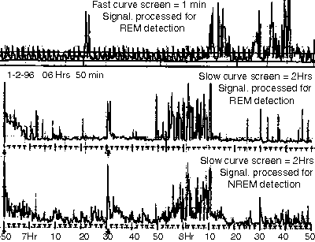

Аппаратура для исследования и тренинга сна.
Принципы обработки и графического представления сигнала от датчика движений век/глаз.
Батищев ГенрихНекоторые эксперименты со сном были утомительны, завершались головной болью и воспаленными глазами, плохим самочувствием днем. Но все проходило после одной или нескольких ночей обычного сна, а в результате тренировался мозг и впоследствии сон становился все лучше. Это как усталость и боль в мышцах после интенсивных физических тренировок. Конечно, надо быть разумно осторожным, но без преодоления усталости и боли трудно достичь чего-то серьезного.
Некоторые эксперименты со сном были утомительны, завершались головной болью и воспаленными глазами, плохим самочувствием днем. Но все проходило после одной или нескольких ночей обычного сна, а в результате тренировался мозг и впоследствии сон становился все лучше. Это как усталость и боль в мышцах после интенсивных физических тренировок. Конечно, надо быть разумно осторожным, но без преодоления усталости и боли трудно достичь чего-то серьезного.
Некоторые эксперименты со сном были утомительны, завершались головной болью и воспаленными глазами, плохим самочувствием днем. Но все проходило после одной или нескольких ночей обычного сна, а в результате тренировался мозг и впоследствии сон становился все лучше. Это как усталость и боль в мышцах после интенсивных физических тренировок. Конечно, надо быть разумно осторожным, но без преодоления усталости и боли трудно достичь чего-то серьезного.
Примеры сомнограмм. Описание и пояснения в тексте ниже.
"Снимок" с экрана компьютера
Существует множество систем для оздоровления организма и психики, для их совершенствования, для “духовного роста”, для развития определенных способностей… Почти всегда утверждается, что предлагаемые методы абсолютно безопасны и приносят только пользу.
Разработана аппаратура, позволяющая строить достаточно информативные сомнограммы в режиме реального времени и приспособленная для удобного и регулярного использования в домашних условиях. Выработана методика исследований — диалог между человеком, находящемся в глубоком сновидном состоянии, и его бодрствующим партнером. Проведены предварительные оценочные эксперименты. Результаты позволили взглянуть на сновидения и сновидные состояния не с точки зрения связанных с ними проблем и патологий, но прежде всего как на потенциально ценный и богатый ресурс, который можно исследовать и использовать практически.
Разработана аппаратура, позволяющая строить достаточно информативные сомнограммы в режиме реального времени и приспособленная для удобного и регулярного использования в домашних условиях. Выработана методика исследований — диалог между человеком, находящемся в глубоком сновидном состоянии, и его бодрствующим партнером. Проведены предварительные оценочные эксперименты. Результаты позволили взглянуть на сновидения и сновидные состояния не с точки зрения связанных с ними проблем и патологий, но прежде всего как на потенциально ценный и богатый ресурс, который можно исследовать и использовать практически.
Более того, предлагаемые система и методика могут быть использованы не только в лабораториях, но и в домашних условиях частными исследователями и любителями, число которых растет.